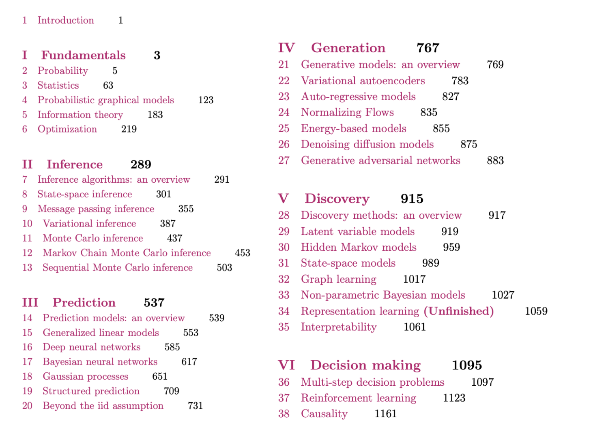

Probabilistic Machine Learning: Advanced Topics
by Kevin Patrick Murphy.
MIT Press, 2023.

Key links
If you use this book, please be sure to cite
@book{pml2Book,
author = "Kevin P. Murphy",
title = "Probabilistic Machine Learning: Advanced Topics",
publisher = "MIT Press",
year = 2023,
url = "probml.ai"
}
Downloads since 2022-02-28.


Acknowledgements
I would like to thank the following people for helping with this book.
- People who helped write some of the sections
(details in the preface):
Alex Alemi (Google),
Marco Cuturi (Apple, work done at Google),
Jeff Bilmes (U. Washington),
Justin Gilmer (Google),
Roy Frostig (Google),
Andrew Wilson (NYU),
George Papamakarios (Deepmind),
Balaji Lakshminarayanan (Google),
Yang Song (Stanford),
Durk Kingma (Google),
Mihaela Rosca (Deepmind / UCL),
Shakir Mohamed (Deepmind),
Vinayak Rao (Purdue),
Ben Poole (Google),
Simon Kornblith (Google),
Been Kim (Google),
Finale Doshi-Velez (Harvard),
Lihong Li (Amazon, work done at Google),
Victor Veitch (Google / U. Chicago),
Alexander D'Amour (Google).
- People who helped with the code and figures:
Mahmoud Soliman, Aleyna Kara, Gerardo Durán-Martín and others
listed here.